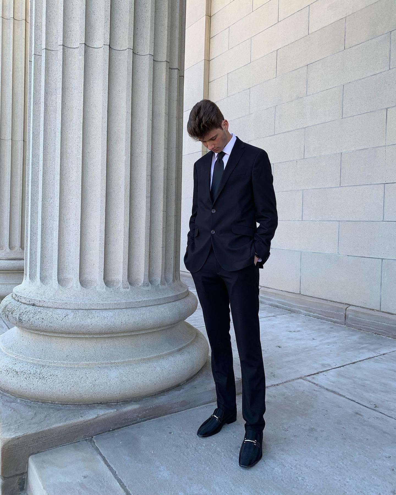

Major: Digital Media, Arts, and Technology, B.A. from Penn State
Behrend
About me:
Project contributions:
Michael Simons
Major: Digital Media, Arts, and Technology, B.A. from Penn State
Behrend
About me:
Project contributions:
Connor Carpenter

Major: Digital Media, Arts, and Technology, B.A. from Penn State
Behrend
About me: I am a sophmore DIGIT student at Penn State Behrend, looking
to get a degree in graphic design. I've lived in Erie my whole life and
decided to attend Behrend because it's close to home, and a lot of my
family has gone here. I chose to be a DIGIT major because I've always
enjoyed working with computers and technology in general, and also like
to express my creativity. In my free time, I enjoy working out,
listening to music, playing basketball, spending time with my friends
and family, and playing games with my friends.